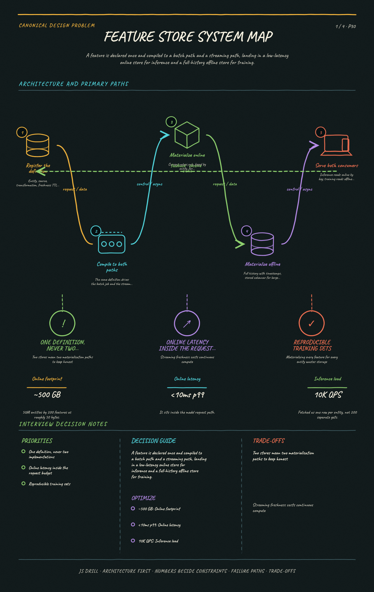

https://frosty110.github.io/js-drill/assets/system-design/infographics/design-problems/p30/architecture-overview.pngA feature is declared once and compiled to a batch path and a streaming path, landing in a low-latency online store for inference and a full-history offline store for training.
Serve the same features to model training and to online inference without them disagreeing. The signature challenge is training/serving skew — the silent failure where a model scores well offline and badly in production because the numbers it sees at request time were computed differently.
All questions, model answers and diagrams for Design a Feature Store →